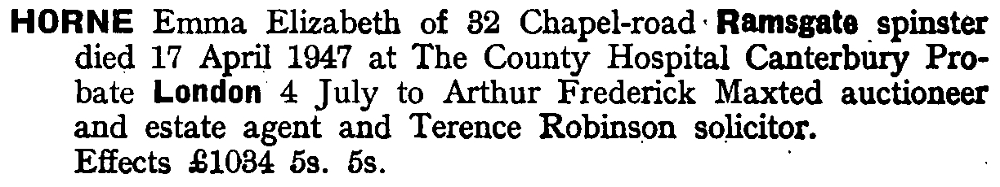
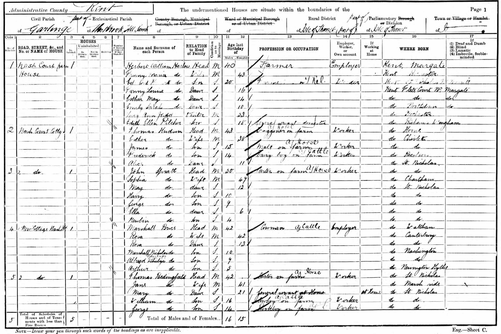
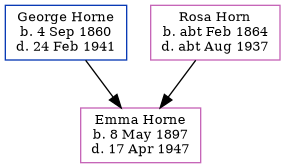

Emma Elizabeth Horne 1897 - 1947
[ Home ] | [ Calendar ] | [ Surnames Index ] | [ Census Index ] | [ Family History ]A dressmaker and the child of George Horne (a barman) and Rosa Horn, Emma Horne, the second cousin twice-removed on the father's side of Nigel Horne, was born in Ramsgate, Kent, England on May 8, 18971,2,3,4 and baptized there at St Paul's Church, King St on May 26, 1897, the same day as her sister Alice Rose.
During her life, she was living at 62 Boundary Road in Ramsgate on Mar 31, 19019; at 77 Hardres Street in Ramsgate on Apr 2, 19118 and on Jun 19, 19213; and at 32 Chapel Road in Ramsgate on Sep 29, 19394 (when she was living with her sister, Alice Rose,) and in 1947 (the same place as her father had been living on Sep 29, 1939).
She died on Apr 17, 1947 in County Hospital, Canterbury, Kent, England5,6,7.
Parents
- George Charles was born on Sep 4, 1860
- Rosa Louisa was born c. Feb 1864
Citations
- 1901 England Census Online publication - Provo, UT, USA: The Generations Network, Inc., 2005.Original data - Census Returns of England and Wales, 1901. Kew, Surrey, England: The National Archives of the UK (TNA): Public Record Office (PRO), 1901. Data imaged from the National
- 1911 England Census Online publication - Provo, UT, USA: Ancestry.com Operations, Inc., 2011.Original data - Census Returns of England and Wales, 1911. Kew, Surrey, England: The National Archives of the UK (TNA), 1911. Data imaged from the National Archives, London, England.
- 1921 Census Of England & Wales - Findmypast (was age 23 and the daughter of the head of the household)
- 1939 Register - Findmypast (was recorded at this address)
- England & Wales Government Probate Death Index 1858-2019 - Findmypast
- England & Wales deaths 1837-2007 - Findmypast
- England & Wales, National Probate Calendar (Index of Wills and Administrations),1861-1941 Online publication - Provo, UT, USA: Ancestry.com Operations Inc, 2010.Original data - Principal Probate Registry. Calendar of the Grants of Probate and Letters of Administration made in the Probate Registries of the High Court of Justice in England. Londo
- 1911 Census for England & Wales - Findmypast (was age 13 and the daughter of the head of the household)
- 1901 England, Wales & Scotland Census - Findmypast (was age 3 and the daughter of the head of the household)
Media
Emma Elizabeth Horne - probate

1901 UK Census

1911 UK Census - page 1

1911 UK Census - page 2

England & Wales births 1837-2006 - BMD/B/1897/2/AZ/000284/299
England & Wales deaths 1837-2007 - BMD/D/1947/2/AZ/000443/103
1939 Register - TNA/R39/1765/1765E/006/28
England Births & Baptisms 1538-1975 - R_884822322
Kent Baptisms - GBPRS/CANT/B/96290195
England & Wales Government Probate Death Index 1858-2019 - GBOR/GOVPROBATE/C/1947-1947/00090788
1921 Census of England & Wales - GBC/1921/RG15/04474/0051/04
Family Tree
Generated by ged2site. Last updated on Jun 11, 2024